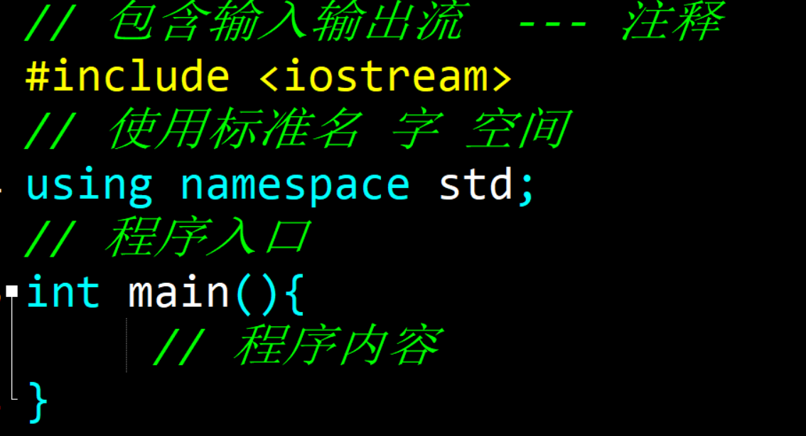
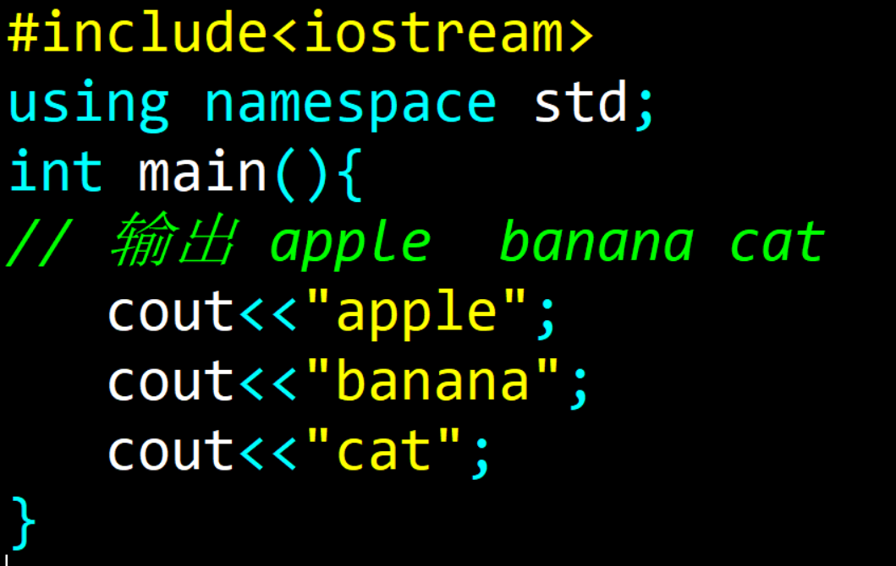
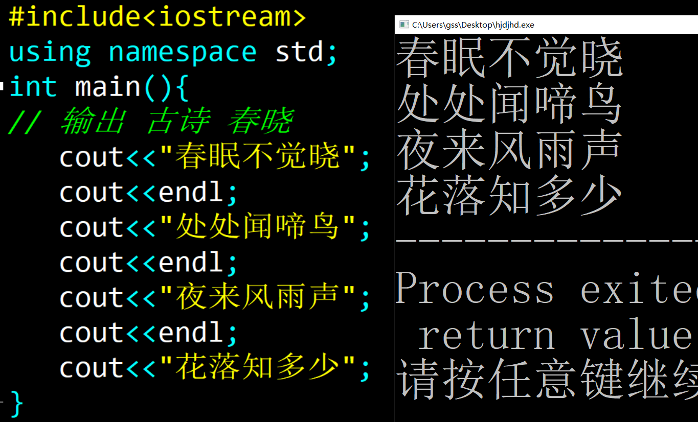
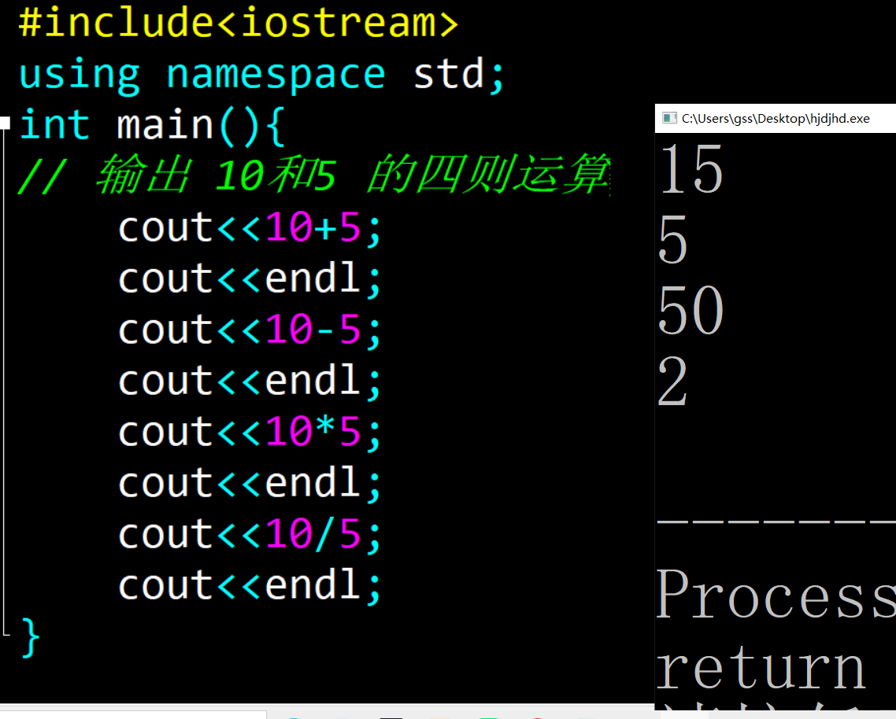
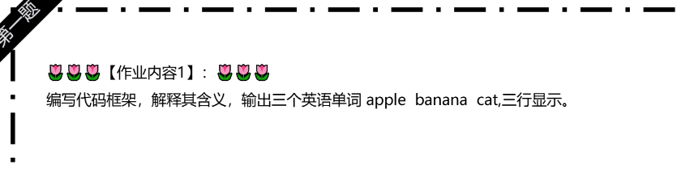
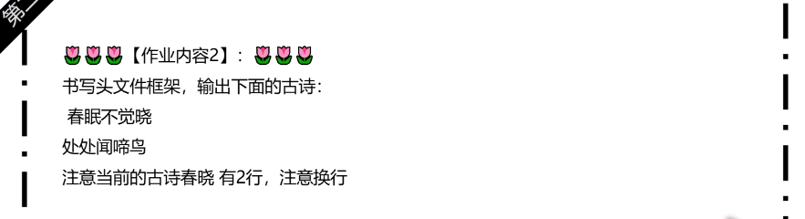
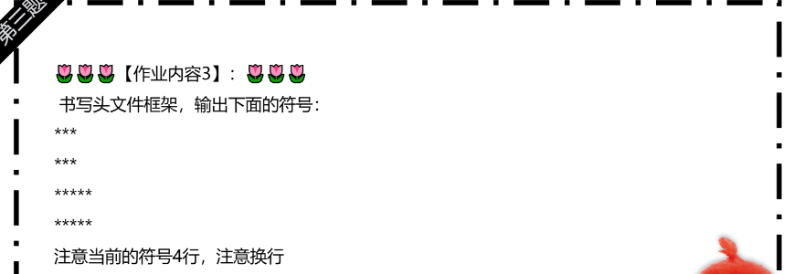

思维训练1 课 初始C++
知识点梳理内容
-
框架的含义
：
C++基本框架代码解析 -
语句输出 ：
cout指令的连续使用输出
-
文字，符号，数字输出 ：
文字，单词输出加双引号
符号加双引号
数字可以直接输出，不要引号，数学运算直接输出，不要引号
重点难点解析
-
框架的书背记默写 ：
1. 框架数值并且默写
-
cout 输出指令 ：
输出的内容使用 cout<< 新内容1 ；
写完指令需要加分号结束程序
-
古诗，单词输出 ：
文字加引号，注意使用endl 指令表示换行 -
数字运算直接输出 ：
数字和文字的区分！
配套练习
- 基础语法练习1 ：框架含义
- 基础语法练习2 ：单词输出
- 基础语法练习3 ：古诗输出并且换行
- 基础语法练习4 ：四则运算数学
📸 参考代码与练习说明
示例1：框架的含义
【题目】书写头文件框架，解释含义

示例2：单词的输出
【题目】编程指令，输出单词 apple banana cat
【关键代码】 cout<<"内容" ;

示例3：春晓古诗
【题目】输出春晓的古诗
【关键代码】 endl； 换行的指令

示例4：数字运算
【题目】输出春晓的古诗
【关键代码】 数字运算不要引号

作业练习
- 作业练习1 ：单词输出
- 作业练习2：古诗输出
- 作业练习3：输出符号


